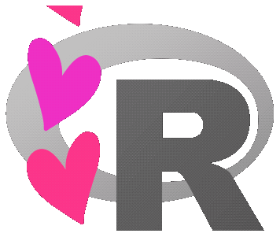

R Users Group
This website contains resources for using R at the Urban Institute for analysis, visualization, mapping, and more. Click on the links above to get started learning about R!
The Urban Institute R Users Group is committed to exposing researchers to the joy and power of R; developing beginner, intermediate, and advanced R skills; encouraging and supporting novel applications of R to public policy research; and building a diverse and mutually supportive community of R Users.

gif credits: Allison Horst
Sign up for List Serv!
Please fill out the following form to receive email updates about upcoming RUG events and trainings. We promise not to spam your inbox:
Fill out this Smartsheet form to unsubscribe from the RUG List Serv.
Contact Info
Please don’t hesitate to contact Aaron Williams (awilliams@urban.org) or Amy Rogin (arogin@urban.org) with any thoughts or questions about R at the Urban Institute.
R Lunch Labs
The Urban Institute R Users Group hosts weekly lunch labs. R Lunch Labs are hands-on trainings for R users of all skill levels and soon-to-be R users. Each meeting begins with a 5-10 minute quick tip. Afterwards, attendees break into small groups and work on a range of topics including introduction to R, data management and plotting, mapping, and machine learning. Most users bring laptops, but there are a few extras for users without laptops.
We have currently paused R Lunch Labs, but they will be back soon! If you have an idea for a topic you want to present informally at a lunch lab, please let us know!